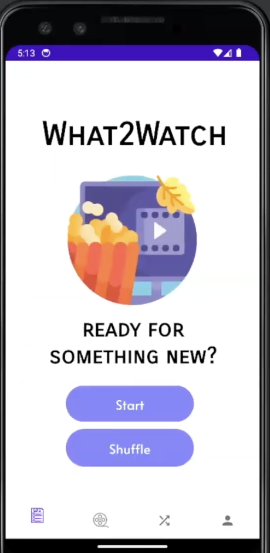

Projects

Date Spark
DateSpark is an interactive date finding app for couples! This project is an iOS mobile app using Swift and SwiftUI.
Features include:
- Interactive wheel for selecting random date ideas
- “Saved Dates” list and custom date input
- Chatbot integration via OpenAI API for personalized date suggestions
- Apple MapKit integration to locate nearby restaurants and cafes
- Firebase Firestore (NoSQL) backend and Google Sign-In authentication
- Youtube Video
- GitHub Repo

What2Watch
What2Watch is an Android app using Kotlin (API 30+) to recommend movies and shows based on user preferences and mood.
Features include:
- Firebase Firestore backend with data parsed from IMDb
- Google Sign-In authentication
- Dynamic UI tailored to user input and viewing habits
- Youtube Video
- GitHub Repo